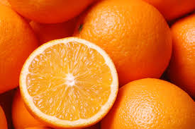

Portocale

Portocalul dulce (Citrus x sinensis) este un arbore fructifer hibrid între mandarin și pomelo. Este vorba despre un arbore de mărime mijlocie, dar în condiții optime poate ajunge la 13 m înălțime, are coroana mare, rotundă sau piramidală, cu frunze ovale de 7–10 cm cu margine dreaptă și ramuri care uneori au spini mari de 10 cm. Florile sunt albe parfumate, care apar izolat sau în buchet. Fructul este Portocala dulce.